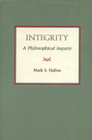

Defining integrity, a virtue that is central, but neglected in the annals of moral philosophy
Defining integrity, a virtue that is central, but neglected in the annals of moral philosophy


 Defining integrity, a virtue that is central, but neglected in the annals of moral philosophy
Defining integrity, a virtue that is central, but neglected in the annals of moral philosophy

|  |
IntegrityA Philosophical InquiryMark S. Halfoncloth EAN: 978-0-87722-605-5 (ISBN: 0-87722-605-9) |
"The book is a pleasure to read. An interesting general conception of integrity is worked out in an attractively modest way, i.e., without the strained profundity or the inflated rhetoric one sometimes finds in moral-philosophical writings."
—Norman Care, Oberlin College
In this book, Mark Halfon examines integrity, a virtue that is generally acknowledged to be of central importance but one that has been almost completely neglected in the annals of moral philosophy. He begins by distinguishing between having moral integrity and performing moral actions and argues that "it is not the case that consistently conforming to one’s own principles will guarantee that a person has integrity." He then defines a person of integrity as one who maintains a consistent commitment to do what is best, especially under adverse conditions.
In defending this definition, Halfon discusses the connection between integrity and compromise, and distinguishes between compromising and revising or reassessing one’s commitments. The last section of the book is an inquiry into the value of moral integrity in relation to various theories of moral value-including Aristotelian, Kantian, utilitarian, and Rawlsian views. Halfon concludes that any of these approaches may have validity for a "particular kind of person" in a given situation.
"This is a fine analysis of a more or less neglected moral idea; ... [and] at the same time a probing treatise on moral psychology. A fine piece of modern analysis. Anyone interested in the place of integrity in morality will have to read this book."
—Andrew Oldenquist, Ohio State University
"An important problem is introduced in an interesting way.... Halfon's book...could prove helpful for introducing students to important problems regarding the conceptual framework of moral conflict"
—Ethics
Mark S. Halfon is Assistant Professor of Philosophy at Hunter College, City University of New York.
© 2015 Temple University. All Rights Reserved. This page: http://www.temple.edu/tempress/titles/649_reg.html.